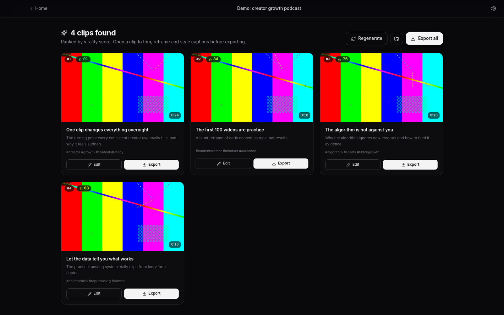
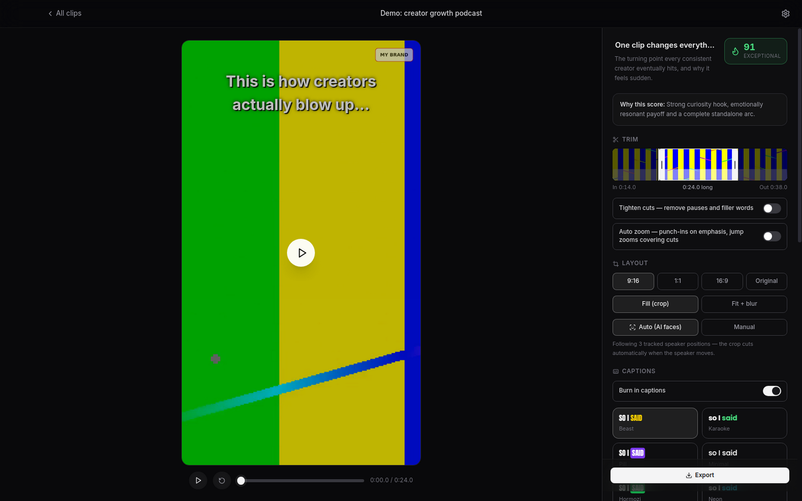
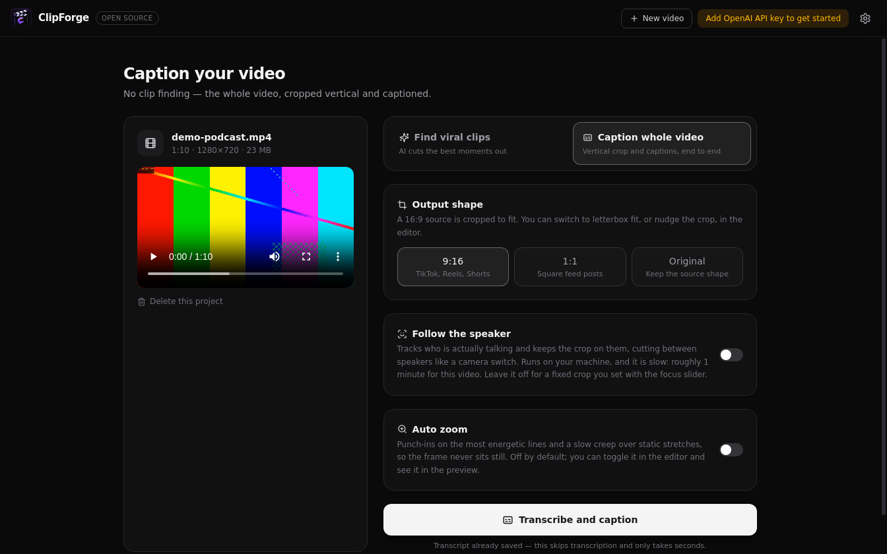

ClipForge
Long videos into vertical clips, on your own machine
A free, open-source desktop app that finds the moments worth clipping, reframes them to 9:16 following whoever is speaking, and burns in animated captions.
MIT licensed. No subscription, no account, no processing cap. Bring an OpenAI key and pay about $0.36 per hour of video.


Clips ranked by score, and the editor where you trim, restyle and export. The source video in these screenshots is a test pattern, not real footage.
Two ways to work
Both run on the same project and share the transcript, so moving between them never pays for transcription twice.
Find viral clips
The AI reads the transcript, cuts the best self-contained moments out and scores each one, and you pick from the results. Steer it with your own brief if you want, such as "find the funniest exchanges".
Caption the whole video
No clip finding. Hand it a 16:9 video and it comes back as one vertical, captioned edit you can trim, restyle and export, with optional speaker tracking and auto zoom.

What it does
Speaker-aware reframing, on-device
Audio-visual active speaker detection checks every face's lip movement against the actual soundtrack, so the 9:16 crop stays on the person talking rather than whoever is gesturing. It cuts between speakers like a camera switch. Runs locally through ONNX Runtime, no cloud.
Virality scoring with a basis
A text rubric derived from Berger and Milkman's research into what gets shared, plus measured vocal energy, combined with a vision pass that scores sampled frames for scroll-stopping potential.
Captions that match the export
Karaoke-style word highlighting in a dozen styles, burned in with libass. Upload your own TTF or OTF fonts. The preview and the exported file use the same layout code, so what you see is what renders.
Auto zoom and tighter cuts
Scene-aware punch-ins on the most energetic lines, jump zooms that cover cuts, and slow creep over static stretches. Pauses and filler words can be removed automatically, with captions, zoom and the face track all remapped to the shorter timeline.
Import almost anything
Local files, or a URL from YouTube, Vimeo, TikTok, Twitch and anywhere else yt-dlp reaches. Private and SSO-protected videos work by borrowing the login from your browser.
Export ready to post
H.264/AAC MP4 with burned-in captions, loudness-normalised to −14 LUFS. NVIDIA NVENC when available, CPU fallback when not. Your own logo or watermark, or none.
Why this instead of Opus Clip
The hosted tools are good. They also charge monthly, cap your minutes, and want your footage on their infrastructure.
| ClipForge | Opus Clip and similar | |
|---|---|---|
| Price | Free and open source. You pay the OpenAI API directly, in cents | Monthly subscription |
| Your footage | Stays on your machine | Uploaded to their cloud |
| Processing minutes | Unlimited, it is your hardware | Capped per plan |
| Watermark | Your own logo, or none | Removed on paid tiers |
| Models | Your choice, and configurable | Theirs |
| Extensible | Fork it, script it, send a pull request | Closed |
What leaves your computer
Worth being precise about, because "local-first" gets used loosely. Two things need a hosted model: transcription and the analysis that picks and scores clips. Everything else is local.
Stays local
- The video file itself
- Rendering and export
- Face tracking and speaker detection
- Zoom planning
- Caption layout and burn-in
- Every edit you make
Sent to the OpenAI API
- Extracted audio, for transcription
- The transcript text, for analysis
- A few sampled frames, for visual scoring
Stored, encrypted
- Your API key, in the OS keychain via Electron
safeStorage
Questions
Is it actually free?
The app is free and MIT licensed, permanently. You pay OpenAI directly for transcription and analysis, which works out at roughly $0.36 per hour of video. There is no subscription, no account, no processing cap and no paid tier holding features back.
Do I need an OpenAI API key?
For finding clips and captioning, yes, because that is what does the transcription and the analysis. Everything else runs without one: the editor, trimming, caption styling, auto zoom, speaker reframing, watermarks and export.
Running Whisper locally so transcription costs nothing is the most-wanted open issue, and contributions are welcome.
Does my video get uploaded anywhere?
No. Only extracted audio, the transcript and a handful of sampled frames go to the OpenAI API. The full video never leaves your machine.
Do I need a GPU?
No. ClipForge uses NVIDIA NVENC if it finds it and falls back to CPU encoding automatically. A GPU makes exports faster, nothing more. Speaker detection runs on CPU perfectly well.
How long can my video be?
There is no fixed limit. Audio is chunked and transcription is checkpointed to disk as it goes, so hour-plus recordings work, and a failure part way through does not mean paying to transcribe it again.
Does it work in languages other than English?
Transcription does. Set the language in Settings; it defaults to English because auto-detect occasionally mislabels English as a similar-sounding language. Captions burn in whatever Whisper returns. Translating captions into another language is on the roadmap, not built yet.
Can it post to TikTok or YouTube for me?
Not automatically. It writes the post caption and hands you the file, then you upload. Direct publishing needs an audited TikTok or YouTube app, which is on the roadmap.
Can I use the clips commercially?
Yes. MIT licence, and the output is yours. Do check the rights on any source footage you did not create.
macOS says the app cannot be opened. Why?
The macOS builds are not code-signed yet, so Gatekeeper objects on first launch. Right-click the app and choose Open, which is a one-time step. Signing and notarisation are wanted, and help is welcome.